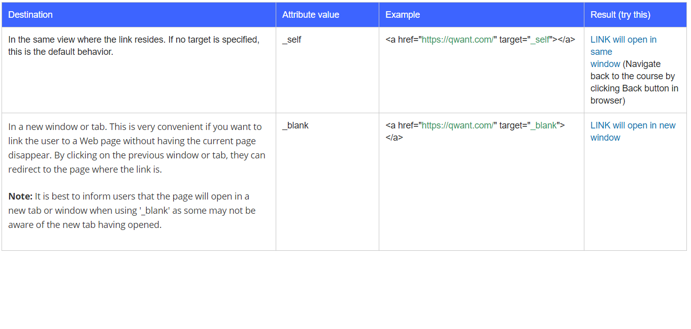

Hyperlink is any text or image you can click and it will take you to another page.
The page can be:
Another webpage e.g wikipedia
A bookmark(a specific part of a webpage)
a local link
an email
Why you should use text over image links
Images are not as well understood or recognised as text.
Text is better for accessibility.
If you have text in an image, search engines do not recognize text in iamge.
Best practices:
Apply hyperlinks to short phrases.
Make link phrase meaningful.
Don't use short link text. e.g 1 letter or 1 character
Appearance - Links have a default appearance in most browsers, blue and underlined.
if you choose to have image links, it should have alternate text that describes the prupose of the link.
Anchor element
The hyperlink tag in html is simply <a>, it is called the anchor element.
Attributes
The 'href' attribute attribute
The href points to the url that the link should jump to.
The 'href' attribute takes an URL(Uniform Resource Locator).
Types of URL
Absolute URL - a link to an external Website
Relative URL - a link to a file or page within the same website
A link to an element on the same page e.g href="#intro"
protocols such as "mailto:123@tk.com
The 'target' attribute
The target specifies the destination where the linked URL in href should be opened.
It can take a variety of different values, but for our purposes, use below:

Attributes : Media and download
The 'media' attribute
The media attribute was introduced in HTML5.It is used to specify what kind of media or device the URL
you linked to in href is optimized for. The URL could be target for special devices like projectors, speech synthesizers
or pages meant to be printed. It is useful if you want to cater your document that the URL points to a particular device type.
The 'Download' attribute
The download attribute is also in new in HTML5 and it makes a link download a file instead of navigate to another location.
It takes in the filename as value but the value is optional.So the download attribute can be specified in the following: